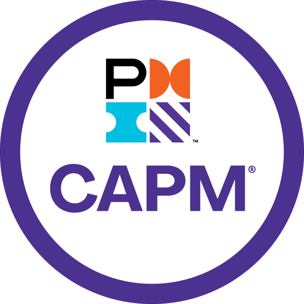

UX & Product Thinking
- User research & discovery
- User journeys & task flows
- Wireframes & information architecture
- Usability testing
- Accessibility / WCAG
- Design systems
I’m a web designer/developer based in New Haven, CT, currently building digital experiences at Wesleyan University. With a background in Computer Science and a Master’s in Interaction Design from UT Dallas, my work balances technical depth with thoughtful design.
My not-so-secret superpower? I can code and bring my designs to life. The coder side of me keeps my ideas grounded — practical, scalable, and dev-friendly (you’re welcome, developers) — while the designer in me keeps asking how the experience could feel clearer, easier, or just better. Having lived in three countries and stumbled through more apps than I can count, I bring a global lens to the way I notice and solve problems.
I used to be the person thinking, “Ugh, they could’ve just done this better.” Now? I’m the person making it better. And if I’m not designing, chances are I’m teaching my dog a new trick, frantically writing down an idea before I forget it, or — let’s be honest — scrolling through social media (I’m working on that habit).
I design, build and maintain websites and digital tools for the university community, from accessibility fixes to full redesigns. Part developer, part designer, part problem-solver.
Designed and built front-end interfaces for client products, including a UI/UX redesign of a business continuity platform. Turned dense workflows into clear, usable screens.
Graded and gave feedback on coursework while completing my master’s in Interaction Design. Kept a close eye on clarity, rigor and fairness.
HFI’s certification in usability analysis and user-centered design.
Ongoing coursework in UX, interaction design, and design thinking.

Project Management Institute’s Certified Associate in Project Management.
Research, wireframing, prototyping, and testing, through Coursera.